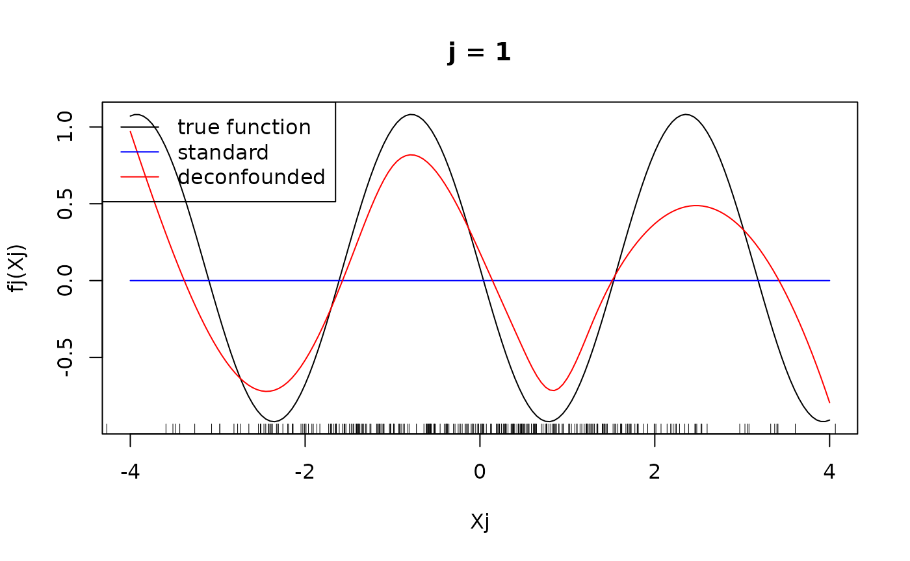
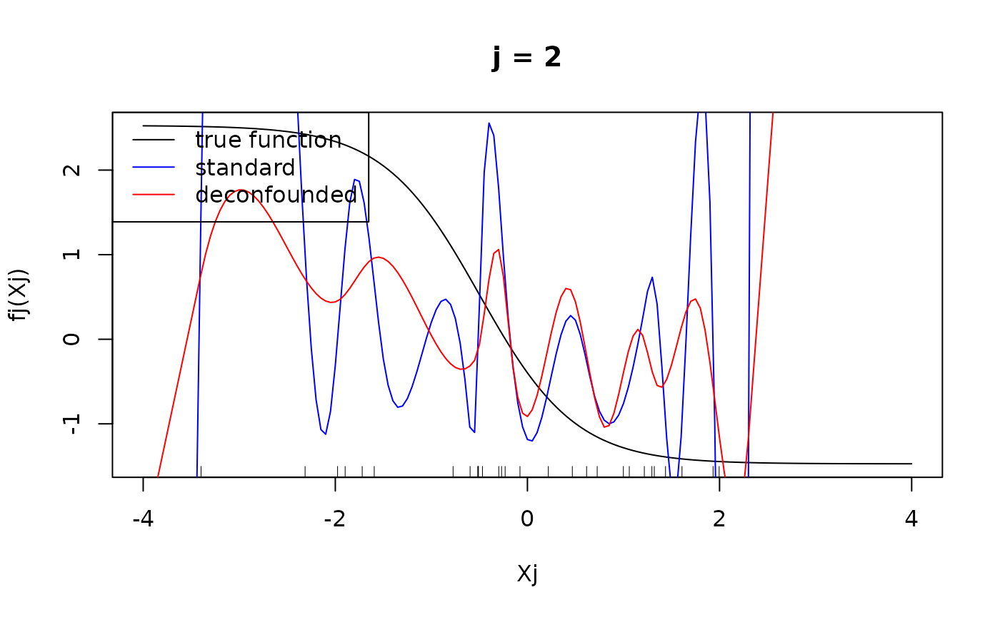
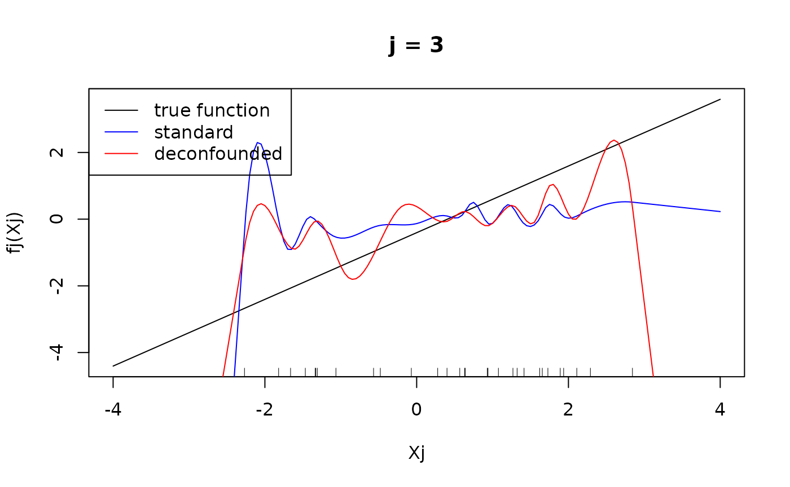
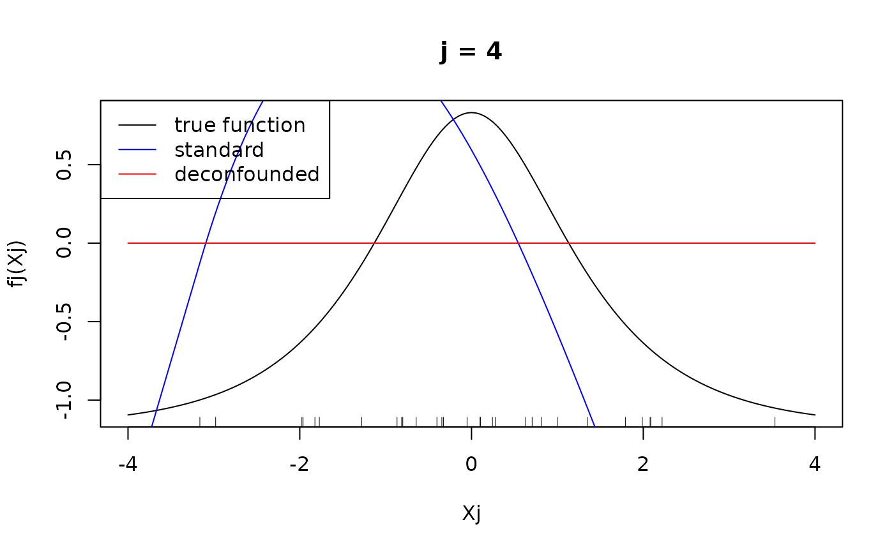

SDAM.RmdIn the following, we show the functionality of SDAM and show how it can be used to fit a high-dimensional additive model in the presence of hidden confounding and how to analyze the fitted model. SDAM is an implementation of the algorithm described in (Scheidegger, Guo, and Bühlmann 2025), where also a systematic simulation study can be found.
We first simulate some data that is confounded. We assume the data generating process where the function is additive in the first 4 covariates.
set.seed(99)
# function f is additive in the first 4 covariates
f1 <- function(x){-sin(2*x)}
f2 <- function(x){2-2*tanh(x+0.5)}
f3 <- function(x){x}
f4 <- function(x){4/(exp(x)+exp(-x))}
f <- function(X){f1(X[,1])+f2(X[,2])+f3(X[,3])+f4(X[,4])}
n <- 30
p <- 20
q <- 5
Gamma <- matrix(runif(q*p, min = -1, max = 1), nrow=q)
delta <- runif(q, min = 0, max = 2)
H <- matrix(rnorm(n*q), nrow = n)
E <- matrix(rnorm(n*p), nrow = n)
nu <- 0.5*rnorm(n)
X <- H %*% Gamma + E
Y <- f(X) + H %*% delta + nuThe goal is to estimate the function . We fit both a standard additive model and a deconfounded additive model using the trim transformation.
library(SDModels)
fit_standard <- SDAM(X = X, Y = Y, Q_type = "no_deconfounding")
fit_trim <- SDAM(X = X, Y = Y, Q_type = "trim")For both models, we compare the predicted values to the true function by calculating the mean squared error on the training data.
pred_standard <- predict(fit_standard, Xnew = X)
pred_trim <- predict(fit_trim, Xnew = X)
(MSE_standard <- mean((f(X) - pred_standard)^2))
#> [1] 4.801294
(MSE_trim <- mean((f(X) - pred_trim)^2))
#> [1] 4.798768We see that the mean squared error when using the deconfounding is smaller than using no spectral transformation. Let us have a look at the variable importance.
#par(mfrow = c(2,1))
plot(varImp(fit_standard), main = "Standard Additive Model", xlab = "j", ylab = "variable importance")
plot(varImp(fit_trim), main = "Deconfounded Additive Model", xlab = "j", ylab = "variable importance")We see that both methods can capture the effect of the four active variables. However, when using deconfounding, there is much less signal that is captured from other covariates, whereas a plain additive model also attributes significant influence to the non-influential covariates. We can get the size of the active set by using the function and see that when using deconfounding, we get a smaller set of active variables.
print(fit_standard)
#> SDAM result
#>
#> Number of covariates: 20
#> Number of active covariates: 9
print(fit_trim)
#> SDAM result
#>
#> Number of covariates: 20
#> Number of active covariates: 12Let us finally have a look at the individual component functions . They can be displayed using the function.
#par(mfrow = c(2,2))
xx <- seq(-4, 4, 0.05)
for(j in 1:4){
fj <- get(paste("f", j, sep = ""))
predj_standard <- predict_individual_fj(fit_standard, xx, j)
predj_trim <- predict_individual_fj(fit_trim, xx, j)
plot(xx, fj(xx) - mean(fj(X[, j])), type = "l", main = paste("j = ", j, sep =""), xlab = "Xj", ylab = "fj(Xj)")
rug(X[, j])
lines(xx, predj_standard, col = "blue")
lines(xx, predj_trim, col = "red")
legend("topleft", legend = c("true function", "standard", "deconfounded"), col = c("black", "blue", "red"), lty = 1)
}
#> Warning in rug(X[, j]): some values will be clipped
We see that on the true active set, the difference in fitted function is not very large, at least in the regions, where there are many observations of . This means that the difference in mean squared error is mostly due to overestimation of the effect of the fitted functions outside the active set.